Strikkeopskrifter til dame, børn, baby og herre – med garnet regnet ud
Over 1.100 strikkeopskrifter til dame, børn, baby og herre – gratis og betalte. Vi fortæller dig, hvilket garn du skal bruge, hvor mange nøgler, og hvor det er billigst i dag.
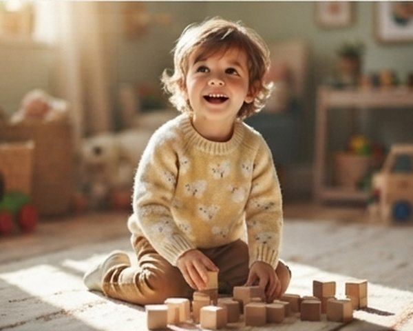
Til børn2–14 år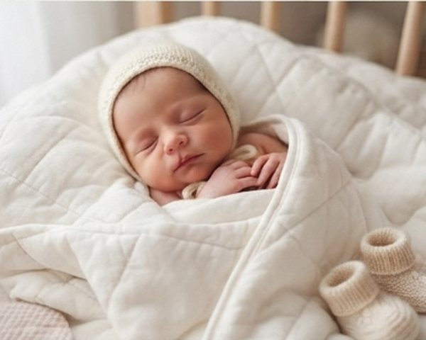
Til baby0–2 år, præmatur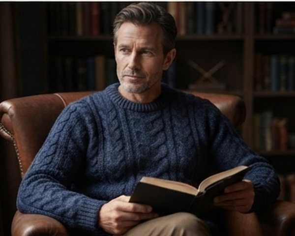
Til herrerS–3XL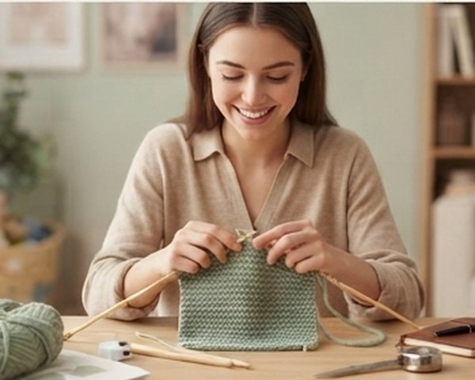
Begynderenemme opskrifter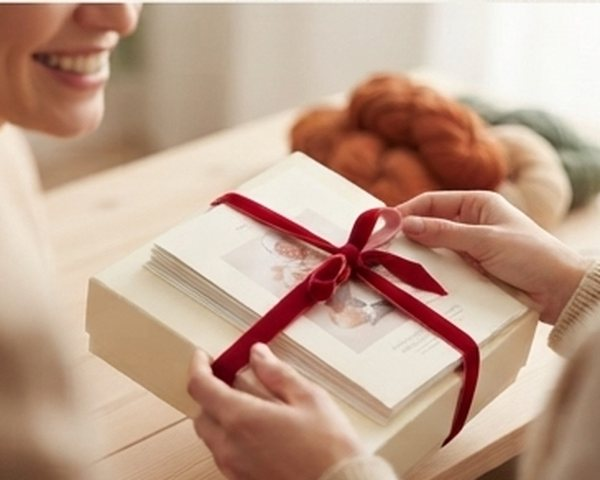
Gratis900+ opskrifterVælg opskrift og størrelse
Vi har materialelisten klar: garn, gram pr. størrelse, pinde og strikkefasthed.
Se garnet – og alternativerne
Originalgarnet, plus 2–3 alternativer i samme strikkefasthed, ofte til halv pris.
Køb hvor det er billigst
Vi sammenligner danske butikker og sender dig direkte i kurven med det rigtige antal nøgler.
Opskrifter efter type
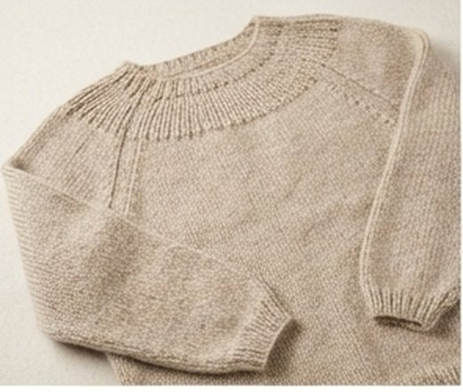
Sweatre & bluserraglan, bærestykke, oversize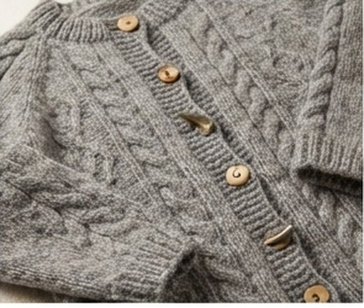
Cardigansmed og uden knapper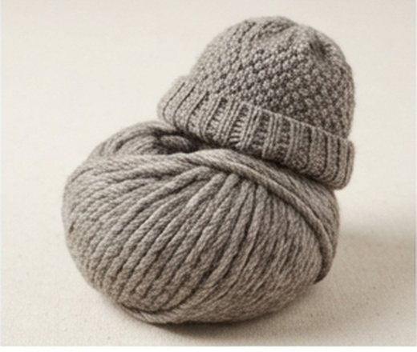
Huerét nøgle, én aften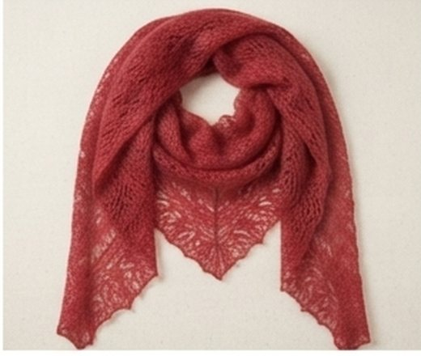
Sjaler & tørklæderhulmønster, halsrør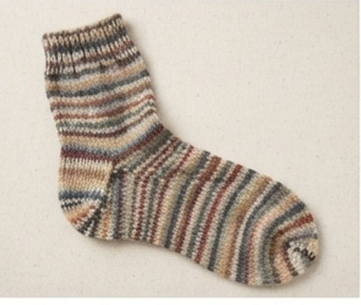
Sokkerstrømpegarn der holder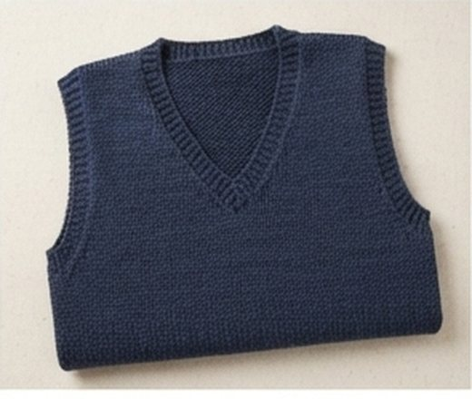
Veste & slipovershurtige projekter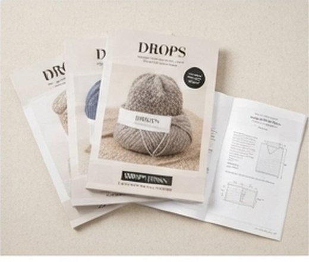
DROPS-opskrifter900+ gratis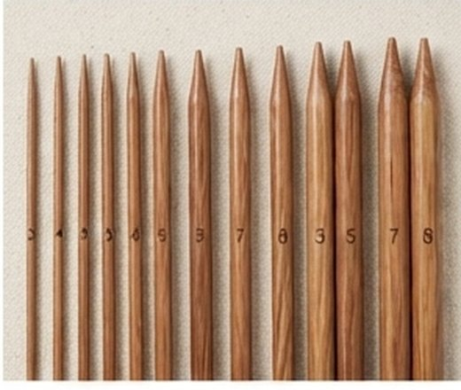
Efter pindestørrelsepind 3 · 4 · 5 · 7 · 8Populære opskrifter lige nu
Se alle opskrifter →Garn på tilbud i dag
Se alle tilbud →Guides
Alle guides →Strikkeopskrifter med garnet regnet ud
De fleste sider med strikkeopskrifter stopper, hvor det bliver besværligt: du har fundet en sweater, du vil strikke, og nu skal du selv finde ud af, hvilket garn den kræver, hvor mange nøgler du skal bruge i din størrelse, og hvad det koster – i fem forskellige butikker. Det er dét stykke arbejde, strikkeopskrifter.dk gør for dig.
Vi samler danske og nordiske strikkeopskrifter – over 900 gratis fra DROPS Design og et voksende udvalg fra danske designere som PetiteKnit, Rikke Jönsson og Önling. For hver opskrift viser vi garnet, den er strikket i, alternativer i samme strikkefasthed, og dagens pris pr. nøgle hos de danske garnbutikker, vi sammenligner. Priserne hentes automatisk hver nat, så de er sjældent mere end et døgn gamle.
Find opskrifter til damer, til børn, til baby eller til herrer – eller start med de nemme opskrifter til begyndere, hvis du er ny i strik. Alle gratis strikkeopskrifter er samlet på én side, og DROPS' opskrifter har deres egen, fordi de er så mange.
Ofte stillede spørgsmål
Hvad er strikkeopskrifter.dk?
En samling af danske og nordiske strikkeopskrifter, hvor hver opskrift viser garnforbrug pr. størrelse og dagens garnpris hos danske butikker. Målet er, at du kan vælge opskrift, regne garnet ud og købe det billigst – på ét sted.
Koster det noget at bruge siden?
Nej. Vi får en lille provision fra butikken, hvis du køber garn via vores links. Det ændrer ikke din pris, og det påvirker ikke, hvilken butik vi viser som billigst.
Hvor kommer priserne fra?
Fra butikkernes egne produktfeeds, som vi henter hver nat. Ser du en pris, der ikke passer, så skriv til os – så retter vi det.
Er opskrifterne jeres egne?
Nej. Opskrifterne tilhører designerne og butikkerne, og vi linker til dem. Vores eget bidrag er garndata, beregneren, prissammenligningen og guides.